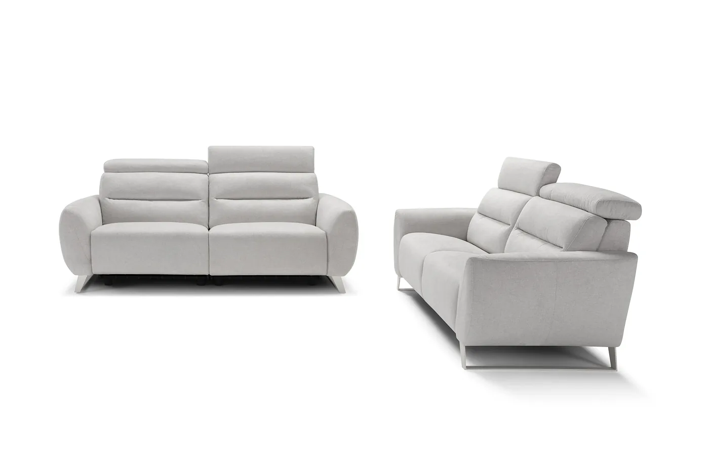
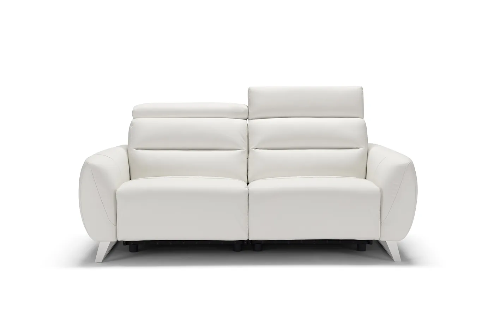

Canapés et relax
Salon
Canapés et fauteuils relax italiens et européens, du classique au contemporain. Comparez les assises, les revêtements et les fonctions de confort dans notre showroom.
- Des salons et des relax à essayer
- Du lundi au samedi, avec ou sans rendez-vous
- Première visite et conseil offerts

Max Divani
Le savoir-faire italien du confort.
Née en 1956 à Altamura, dans les Pouilles, Max Divani fabrique des canapés et des fauteuils. Au magasin : une sélection de salons, du 3-2 classique au grand angle.
Découvrir Max DivaniExplorer les salons
Par quoi voulez-vous commencer ?
Quatre entrées, à ouvrir dans l’ordre qui vous plaît. Chacune mène aux modèles et à leurs dimensions.
Me détendre
Zebra, une place relax ouverte.
Le relax électrique se commande par boutons, sur les places équipées.
- Relax électrique à boutons, en option
- Appuie-têtes réglables
- 162 cm de profondeur relax ouvert, 110 cm refermé

Composer mon salon
Zebra, en angle ou en canapé droit.
La composition suit votre pièce : le côté de l’angle, le nombre de places, avec ou sans relax.
- Angle à gauche ou à droite, avec chaise longue
- Ou canapé droit de deux ou trois places
- Angle fixe : 287 × 238 cm

Choisir mon confort
Curry, une assise sur ressorts ensachés.
Selon le modèle, l’assise repose sur des sangles et de la mousse, ou sur des ressorts ensachés. Les deux se comparent au magasin.
- Curry et Osaka : assise sur ressorts ensachés
- Relax électrique en option sur le trois places

Voir les matières
Cuir, microfibre ou tissu.
Le revêtement se choisit modèle par modèle, échantillons en main, avec une photo de votre pièce.
- Max Divani : cuir Texas, un cuir pigmenté, en 24 coloris
- Curry : en cuir ou en tissu microfibre

Prochainement au magasin
Tata, un grand angle arrondi.
Formes souples et assise profonde : Tata est attendu mi-janvier 2027.
Découvrir TataNicoletti, le relax Cozy³
Un confort réglable, place par place.
Au magasin, essayez les moteurs des modèles Memphis et Oakland. Chaque place relax a sa propre commande, pour que chacun choisisse sa position. Le système Cozy³ de Nicoletti réunit trois moteurs indépendants.


- Le relax Le dossier s’incline et le repose-jambes se relève, ensemble ou séparément selon le modèle.
- La tête L’appui-tête se redresse séparément, pour lire ou regarder l’écran.
- Le bas du dos Un soutien lombaire réglable complète le confort (sur Memphis : version Comfort).
Les fabricants
Notre sélection de salons.
Découvrez les modèles exposés et les possibilités de commande : configurations, revêtements et finitions varient selon les collections.
-
Max Divani
Des salons fabriqués en Italie, en cuir, microfibre ou tissu.
Voir les salons Max Divani -
Nicoletti
Des canapés relax fabriqués en Italie, dont le système Cozy³ à trois moteurs.
Voir le relax Cozy³ -
De Eiken Zetel
Des fauteuils relax et releveurs d’un fabricant belge.
Voir les fauteuils relax et releveurs -
Les lignes arrondies
Des formes souples pour un intérieur contemporain.
-
Une sélection européenne
D’autres styles et niveaux de gamme pour répondre à différents projets.

Asseyez-vous, comparez : nos salons s’essaient au magasin, sans rendez-vous.
Venir les essayerBien choisir
Six questions avant de choisir.
Ce sont celles que nous vous poserons au magasin. Choisissez une question : la réponse s’affiche aussitôt.
01 · La pièce
Où ira-t-il ?
Un salon de tous les jours ne se choisit pas comme une pièce où l’on reçoit. Regardez aussi la lumière : près d’une grande fenêtre, certains revêtements demandent plus d’attention que d’autres.
02 · L’usage
Pour quoi faire ?
Regarder un film, faire la sieste, recevoir : ce n’est pas la même assise. Profonde et souple pour s’allonger, plus droite et plus ferme pour discuter. Asseyez-vous, comparez les sensations plutôt que les apparences.
Les canapés relax électriques03 · L’espace
Quelle place lui donner ?
Mesurez le mur, mais aussi les passages autour, et la place qu’il faut à un relax ouvert. Pensez à la porte, au couloir et à l’escalier par où il entrera. Un doute ? Nous pouvons venir prendre les mesures chez vous.
Demander une visite chez vous04 · Les places
Combien serez-vous ?
Comptez ceux qui s’y assoient chaque soir, pas les invités d’un jour. Et si vous voulez du relax, demandez combien de places en sont équipées : un trois places n’a pas forcément trois relax.
05 · La forme
En angle ou droit ?
L’angle réunit tout le monde et structure un séjour ouvert. Un canapé droit, seul ou avec un fauteuil, se déplace plus facilement et convient aux pièces étroites. Le côté de l’angle se choisit selon votre pièce.
Les canapés d’angle06 · Le revêtement
Cuir, microfibre ou tissu ?
C’est une affaire de toucher, d’entretien et de vie de famille : enfants, animaux, soleil. Les échantillons sont au magasin : on choisit en main, à la lumière du jour.
Les canapés en cuir italiensToutes les sélections
Chercher autrement.
Relax, releveur, convertible : les différencesTrois usages expliqués en quelques lignes
Selon votre usage
Relax, releveur, convertible.
Trois usages différents, à choisir selon votre espace et vos habitudes. Demandez-nous quels modèles sont à l’essai au magasin.
-
Le canapé relax électrique
Une ou plusieurs places s’inclinent à l’aide d’une commande électrique, pour profiter d’une position plus détendue tout en conservant l’allure d’un salon.
-
Le fauteuil relax et le fauteuil releveur
Le fauteuil relax permet de régler la position du corps. Le releveur ajoute une aide pour passer de la position assise à la position debout.
-
Le canapé convertible et le canapé-lit
Un canapé le jour, un couchage la nuit. Le mécanisme et le matelas se choisissent selon la fréquence d’utilisation et l’espace disponible.

Autour du canapé
Le meuble TV et la bibliothèque.
Complétez votre salon avec un meuble TV ou une bibliothèque adaptés à votre mur.
Voir le séjourVos questions
Avant de choisir.
Peut-on essayer un relax électrique au magasin ?
Oui. Des salons et des fauteuils relax sont exposés au magasin : comparez leurs positions et leur confort, sans rendez-vous.
Quelle différence entre un fauteuil relax et un fauteuil releveur ?
Le fauteuil relax permet de s’incliner et de relever les jambes ; le releveur ajoute une aide pour se mettre debout.
Venez essayer nos salons.
Venez essayer nos salons à Leval-Trahegnies, à quelques minutes de Morlanwelz et d’Anderlues, à un quart d’heure de La Louvière. Notre équipe vous aide à choisir la configuration, les revêtements et les fonctions qui vous conviennent. Parking facile d’accès, avec ou sans rendez-vous.
- Lundi
- 13h30 – 18h30
- Mardi au samedi
- 10h30 – 18h30
- Dimanche
- Fermé
- Téléphone
- 064 46 07 72
- Livraison
- Par nos soins, dans le Hainaut (Binche, La Louvière, Mons, Charleroi…) et la province de Namur
Pour un projet plus loin, ailleurs en Belgique ou à l’étranger : parlons-en.